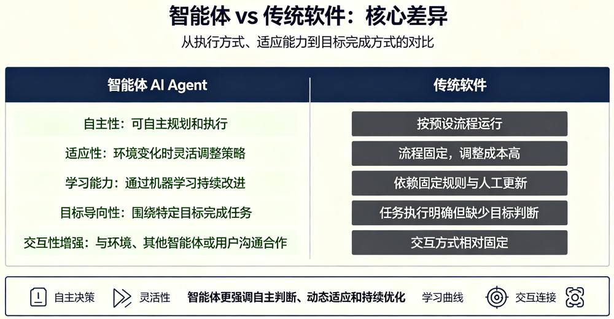
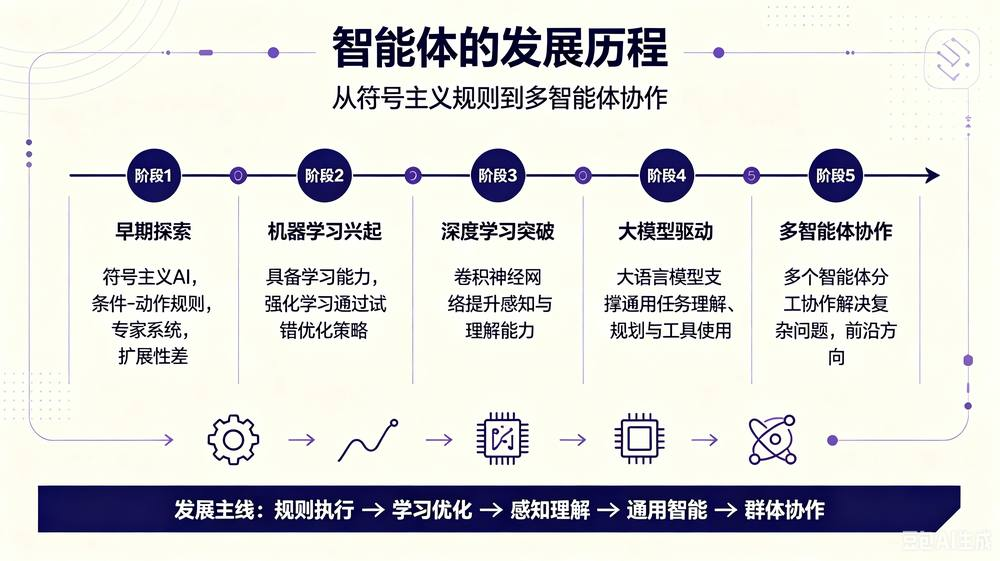
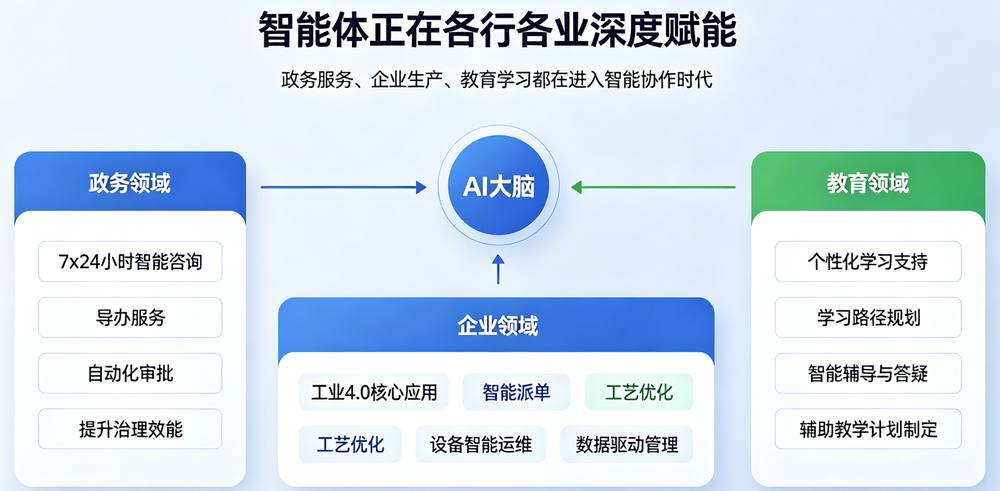

第 1 页 · 1 认识智能体
1 认识智能体

模块6：打造智能体
第 2 页 · 从科幻想象到现实应用，智能体正以前所未有的速度改变着我们的生活和工作方式
从科幻想象到现实应用，智能体正以前所未有的速度改变着我们的生活和工作方式
第 3 页 · 一、什么是智能体？
一、什么是智能体？
第 4 页 · 二、智能体的基本结构
二、智能体的基本结构
感知模块
作为智能体的“感官系统”，负责全方位接收文本、语音、图像等多模态外部输入，通过语义解析与特征提取，精准理解用户的真实意图与需求。
决策模块
作为智能体的“大脑中枢”，依托大模型强大的理解与推理能力，完成复杂任务的拆解、逻辑分析，并智能规划工具调用的最优路径与步骤。
执行模块
作为智能体的“手脚系统”，通过API接口、功能插件等工具连接外部环境，精准执行决策指令，完成具体操作并实时反馈任务结果与状态。
智能体是一个宽泛概念，其形态不拘一格，既可以是运行在服务器集群上的纯软件程序，也可以是像自动驾驶汽车、服务机器人那样集成了感知与执行硬件的复杂智能设备。
第 5 页 · 三、智能体 vs 传统软件
三、智能体 vs 传统软件

第 6 页 · 四、智能体的发展历程
四、智能体的发展历程

第 7 页 · 五、智能体的典型应用
五、智能体的典型应用

第 8 页 · 认识QoderWork
认识QoderWork

安装user版qoderwork并尝试生成一个关于“我的大学生活”的PPT。
| 任务要求 | 你的完成情况 |
| 安装桌面user版 | |
| 功能描述 | |
| 智能生成PPT | |
| 其它 |
第 9 页 · 学生分享及教师点评
学生分享及教师点评

| 分享要点 | 分值 | 计分 | 教师点评 |
| 1、 是否顺利安装？ | 20 | 解决问题能力，动手能力 | |
| 2、QoderWork的本质及功能理解？ | 20 | 智能体工具，四大功能 | |
| 3、分析QoderWork与传统软件的差异 | 20 | 从开发、维护难度、使用体验性和效率等多维度分析，阐述自己观点 | |
| 4、用QoderWork完成PPT的质量 | 20 | 团结协作，精益求精 | |
| 5、其它（含逻辑、表情、主动、清晰、流畅、自信等） | 20 | 积极互动，表达流畅，自信开朗 |
第 10 页 · 子任务3：语音提示处理
子任务3：语音提示处理

智能体助手
工作的利器